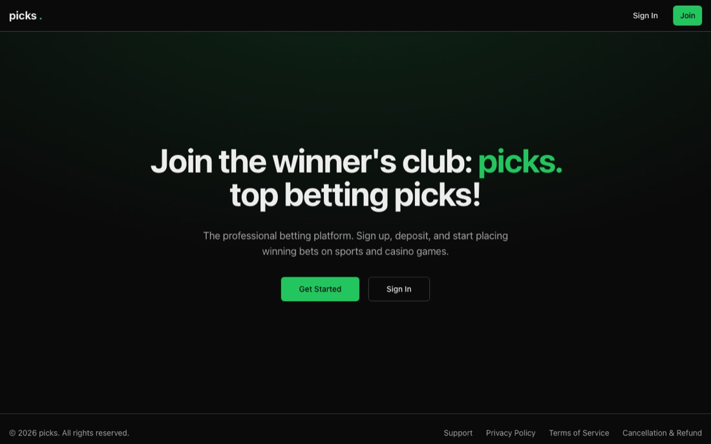

44 stars
picks.
A betting platform on Next.js and Django — markets, odds, wallet and settlement. The most-starred thing I have written, and where I learned what an idempotent payout has to look like.
Next.jsDjangoTypeScriptPostgreSQL